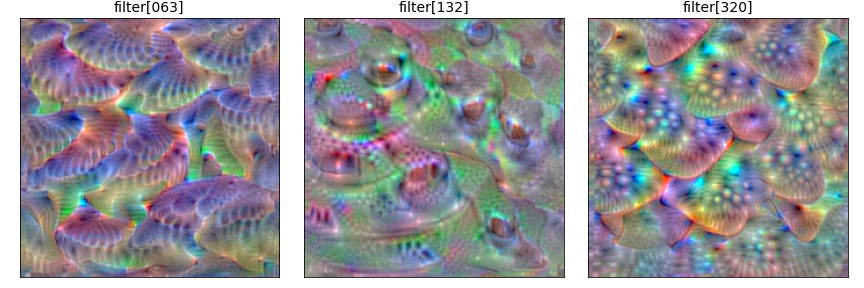
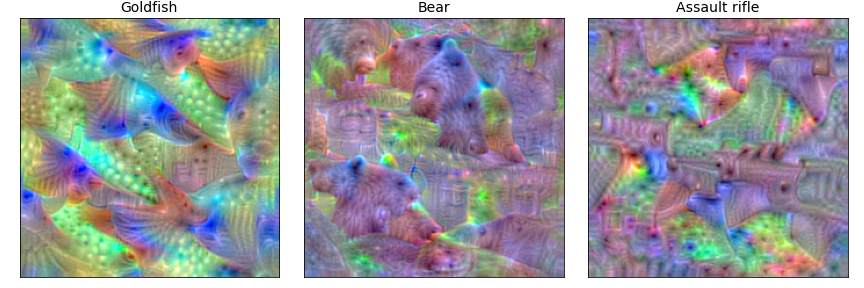

ActivationMaximization
Convolutional Filters

Dense Units

Visualizing Dense Unit

Note
ActivationMaximization class is optimized for VGG16 model in Keras. So, when you visualize with other models, you MUST tune the parameters of ActivationMaximization.
- class tf_keras_vis.activation_maximization.ActivationMaximization(model, model_modifier=None, clone=True)[source]
Bases:
ModelVisualizationActivationMaximization.
- Parameters:
model – A keras.Model instance. When model_modifier is NOT None, this model will be cloned with keras.models.clone_model function and then will be modified by model_modifier according to needs.
model_modifier – A
tf_keras_vis.utils.model_modifiers.ModelModifierinstance, a function or a list of them. We recommend to apply tf_keras_vis.utils.model_modifiers.ReplaceToLinear to all visualizations (excepttf_keras_vis.scorecam.Scorecam) when the model output is softmax. Defaults to None.clone – A bool that indicates whether or not it clones the model. When False, the model won’t be cloned. Note that, although when True, the model won’t be clone if model_modifier is None. Defaults to True.
- __call__(score, seed_input=None, input_range=(0, 255), input_modifiers=[Jitter(jitter=4), Rotate2D(degree=1)], regularizers=[TotalVariation2D(weight=1.0), Norm(weight=0.3, p=1)], steps=200, optimizer=None, gradient_modifier=None, callbacks=None, training=False, unconnected_gradients=tf.UnconnectedGradients.NONE, activation_modifiers=None)[source]
Generate the model inputs that maximize the output of the given score functions.
By default, this method is optimized to visualize keras.application.VGG16 model. So if you want to visualize other models, you have to tune the parameters of this method.
- Parameters:
score –
A
tf_keras_vis.utils.scores.Scoreinstance, function or a list of them. For example of the Score instance to specify visualizing target:scores = CategoricalScore([1, 294, 413])
The code above means the same with the one below:
score = lambda outputs: (outputs[0][1], outputs[1][294], outputs[2][413])
When the model has multiple outputs, you MUST pass a list of Score instances or functions. For example:
from tf_keras_vis.utils.scores import CategoricalScore, InactiveScore score = [ CategoricalScore([1, 23]), # For 1st model output InactiveScore(), # For 2nd model output ... ]
seed_input –
A tf.Tensor,
numpy.ndarrayor a list of them to input in the model. When None, the seed_input value will be automatically generated from a uniform distribution. If you want to visualize multiple images (i.e., batch_size > 1), you have to pass a seed_input object. For example:seed_input = tf.random.uniform((samples, ..., channels), low, high)
Furthermore, if the model has multiple inputs and you want multiple images, you have to do as follows:
seed_input = [ tf.random.uniform((samples, ..., channels), low, high), # 1st input tf.random.uniform((samples, ..., channels), low, high), # 2nd input ... ]
Defaults to None.
input_range –
A tuple of two int values or a list of them. The tuple indicates (min, max) values that is range of the result of this method. If the model has multiple inputs, you can use different input ranges for each model input by passing list of tuples. For example:
input_range = [ (0, 255), # The 1st model input's range (-1.0, 1.0), # The 2nd model input's range ... ]
When None or (None, None) tuple, the input tensor (i.e., the result of this method) will be not applied any limitation. Defaults to (0, 255).
input_modifiers –
A
tf_keras_vis.activation_maximization.input_modifiers. InputModifierinstance, a function, a list of them when the model has a single input. For example:input_modifiers = [Jitter(jitter=8), Rotate(degree=3), Scale(high=1.1)]
When the model has multiple inputs, you have to pass a dictionary that contains the lists of input modifiers for each model inputs:
input_modifiers = { 'input_1': [Jitter(jitter=8), Rotate(degree=3), Scale(high=1.1)], 'input_2': [Jitter(jitter=8)], ... }
Or you could also pass a list of lists of input modifiers for each model inputs as follows:
input_modifiers = [ [Jitter(jitter=8), Rotate(degree=3), Scale(high=1.1)], # For 1st input [Jitter(jitter=8)], # For 2nd input ... ]
Defaults to [Jitter(jitter=4), Rotate(degree=1)].
regularizers –
A
tf_keras_vis.utils.regularizers.Regularizerinstance, a list of regularizers or a list that has lists of regularizers for each input. For example:regularizers = [TotalVariation2D(weight=1.0), Norm(weight=0.3, p=1)]
> Please notice that regularizes does NOT accept function object like input_modifiers.
When the model has multiple inputs, you have to pass a dictionary that contains the lists of regularizers for each model inputs:
regularizers = { 'input_1': [TotalVariation2D(weight=1.0), Norm(weight=0.3, p=1)], 'input_2': [Norm(weight=1.0, p=2)], ... }
Or you could also pass a list of lists of regularizers for each model inputs as follows:
regularizers = [ [TotalVariation2D(weight=1.0), Norm(weight=0.3, p=1)], # For 1st input [Norm(weight=1.0, p=2)], # For 2nt input ... ]
Defaults to [TotalVariation2D(weight=1.0), Norm(weight=0.3, p=1)].
steps – The number of gradient descent iterations. Defaults to 200.
optimizer – A tf.optimizers.Optimizer instance. When None, it will be automatically created. Defaults to tf.optimizers.RMSprop(learning_rate=1.0, rho=0.999).
gradient_modifier – A function to modify gradients. Defaults to None.
callbacks – A
tf_keras_vis.activation_maximization.callbacks.Callbackinstance or a list of them. Defaults to None.training – A bool that indicates whether the model’s training-mode on or off. Defaults to False.
unconnected_gradients – Specifies the gradient value returned when the given input tensors are unconnected. Defaults to tf.UnconnectedGradients.NONE.
activation_modifiers –
A function or a dictionary of them (the key is input layer’s name). When the model has multiple inputs, you have to pass a dictionary:
activation_modifiers = { 'input_1': lambda x: ..., 'input_2': lambda x: ..., ... }
This functions will be executed before returning the result. Defaults to None.
- Returns:
An
numpy.ndarraywhen the model has a single input. When the model has multiple inputs, a list ofnumpy.ndarray.- Raises:
ValueError – When there is any invalid arguments.
- Return type: